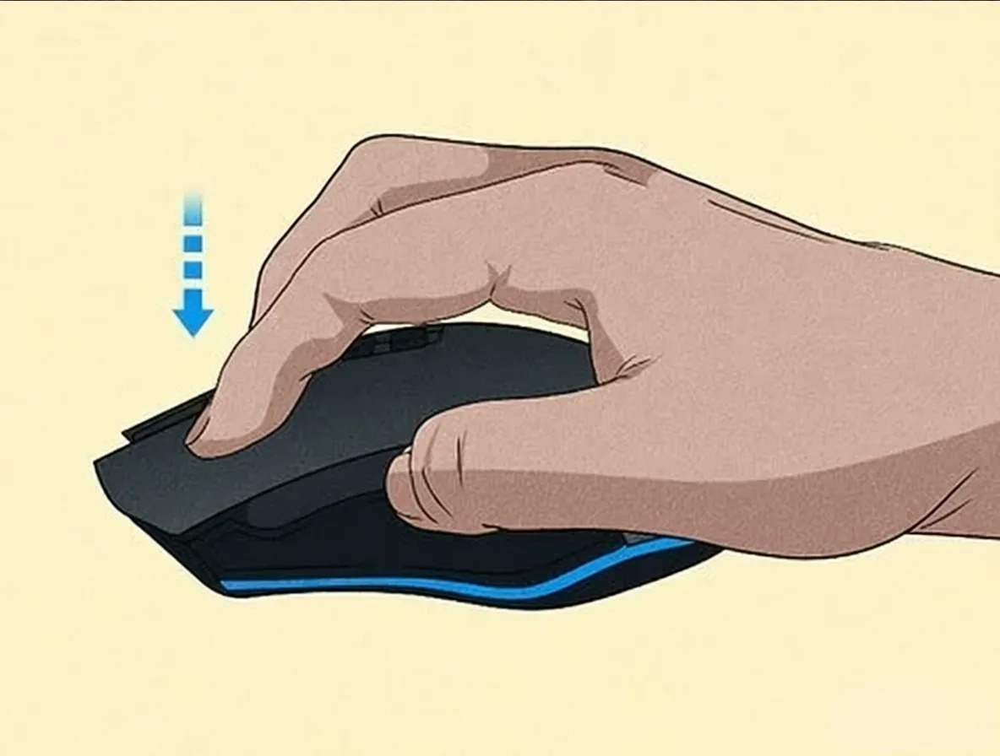

1 Second Click Test
1.0
Timer
0
Score
0.00
CPS
CLICK HERE TO START
SELECT TIME:
1 Second
2 Seconds
5 Seconds
10 Seconds
25 Seconds
50 Seconds
100 Seconds
1.0
Timer
0
Score
0.00
CPS
CLICK HERE TO START
A CPS (clicks per second) test measures how fast a player can click their mouse, and it plays a significant role in competitive Minecraft gameplay—especially in 1.8 PvP modes. Higher CPS can allow players to land more hits, reduce knockback, and maintain better control during fights, giving them a noticeable advantage over slower opponents. Many players practice clicking techniques like drag clicking or butterfly clicking to improve their CPS, though consistency and accuracy are just as important as raw speed. Ultimately, while CPS can enhance performance, skillful timing, positioning, and strategy remain key factors in mastering Minecraft combat.
A CPS (clicks per second) test offers several benefits for gamers, especially those who play fast-paced games like Minecraft. It helps players measure and improve their clicking speed, which can enhance reaction time and overall mouse control during gameplay. Regular practice with CPS tests can also build finger stamina and consistency, allowing players to maintain stable performance during longer sessions. Additionally, it encourages the development of different clicking techniques, helping users find what feels most comfortable and efficient for them. Beyond gaming, CPS tests can simply be a fun way to challenge yourself, track progress over time, and compete with friends.
